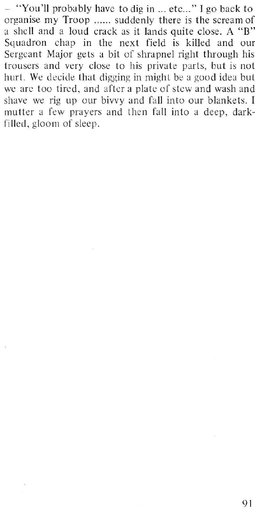

You are here:
Home
>
The Battle: a Tank Officer Remembers
> Page 91
< Prev
Next >

Notes
The man killed was Trooper
Alfred Philip Packman
, who had just joined the Regiment from the recently disbanded 24th Lancers.
Geoff ends his story in a field near
La Barbiere
. According to my Dad, the men were told that this was the "end of the German resistance". A tad premature, perhaps, but 11th Armoured Division had certainly punched a hole through the German lines and 23H had stood their ground with admirable fortitude and courage. There was much still to come, of course, and unfortunately Geoff's account ends here. Nevertheless, he paints a vivid picture of tank life in war and I, for one, am very grateful.
Footnote: Sadly, Geoff didn't enjoy the long life he surely deserved - he died in Surrey in 1967 aged 58. RIP -
Geoffrey Sydney Charles Bishop MC
- and thank you.
< Prev
Next >